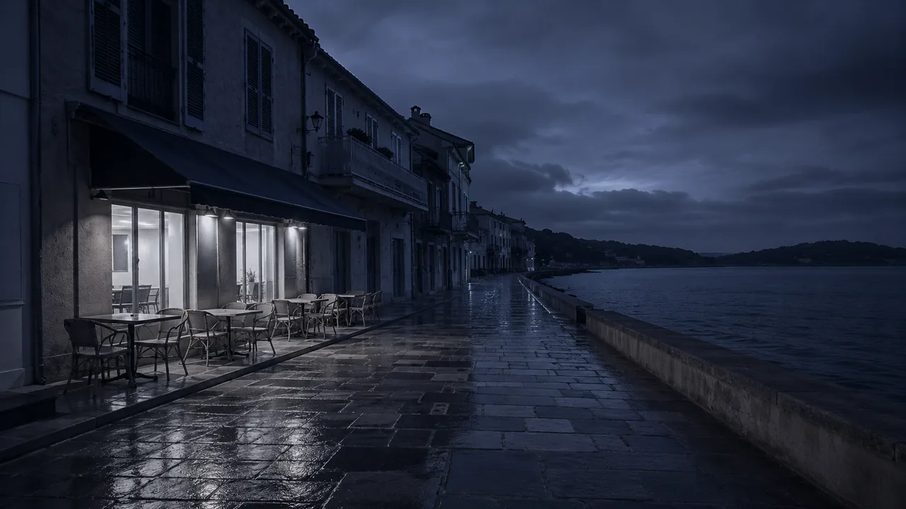
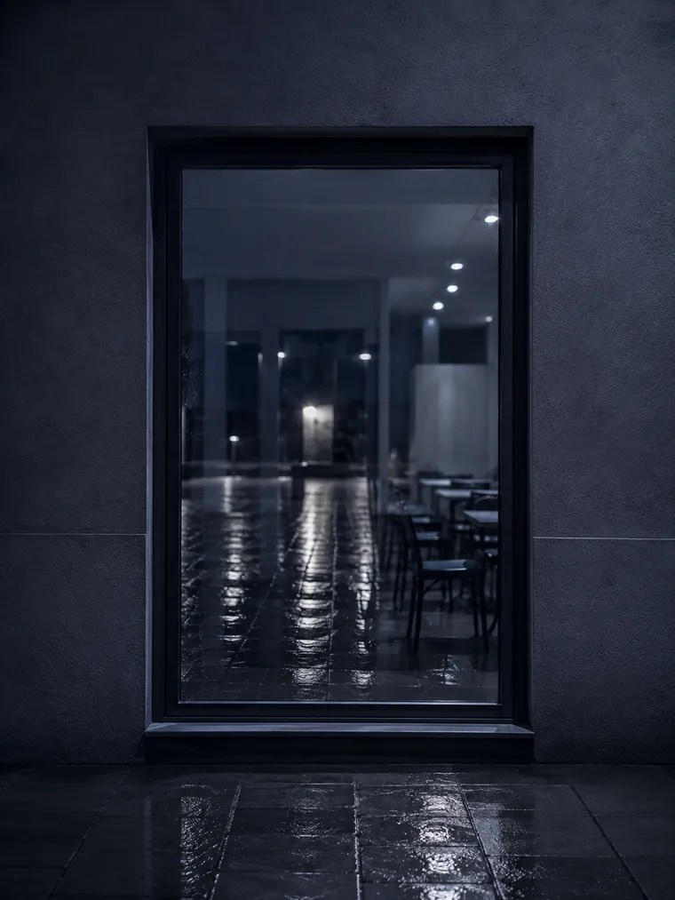
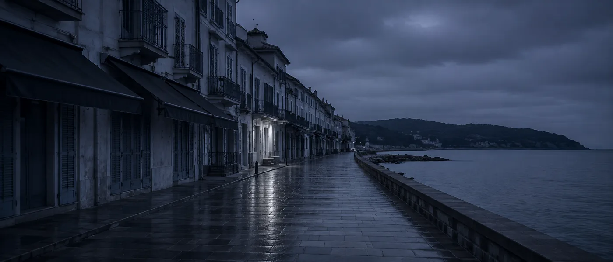
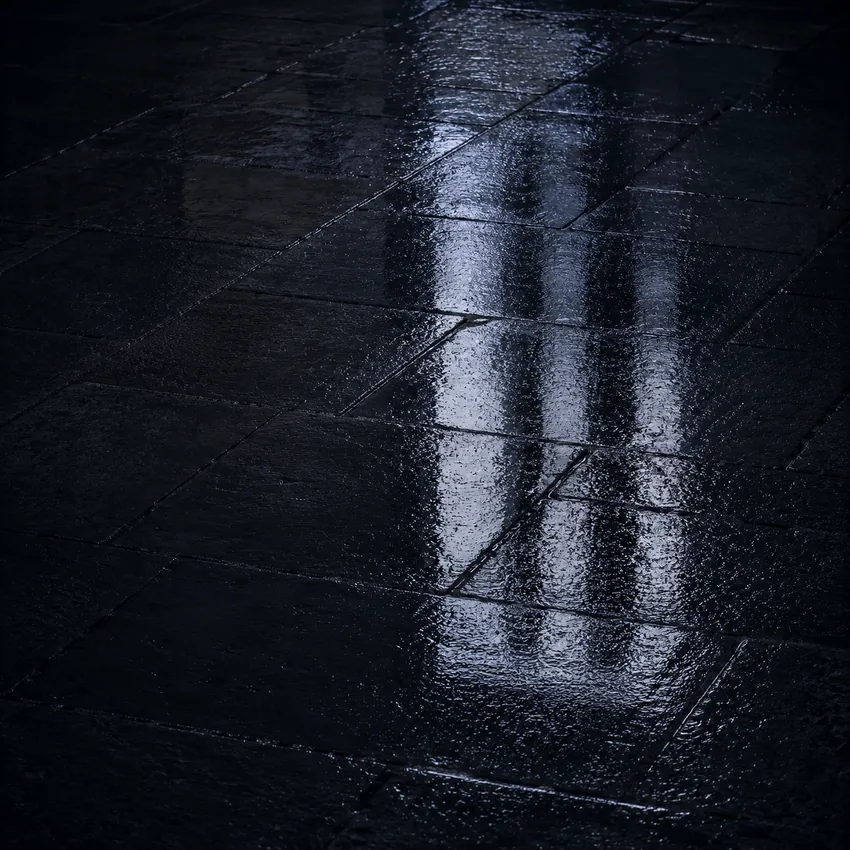

Réservation directe — sans commission
Bouton "Réserver une table" visible sur mobile dès le premier écran. Lien vers votre agenda, formulaire ou WhatsApp. Zéro plateforme, zéro commission — la réservation arrive directement chez vous.

À Sainte-Maxime, votre restaurant accueille des locaux, des familles en vacances et des touristes du Golfe toute l'année. Votre site doit les trouver sur Google avant qu'ils choisissent la table d'en face — et remplir votre salle aussi bien en juillet qu'en novembre.
Sainte-Maxime, c'est une clientèle à l'année. Votre site doit la capter en juillet comme en novembre.
La force de Sainte-Maxime, c'est sa vie locale. Contrairement à Saint-Tropez qui vit uniquement pour l'été, Sainte-Maxime a une vraie population résidente, des familles qui s'installent, des retraités qui déjeunent en semaine, des habitants qui sortent le vendredi soir toute l'année. Votre restaurant a une activité 12 mois sur 12 — et votre site doit refléter cette réalité.
En été, la clientèle change — touristes du Golfe, familles en vacances, touristes qui traversent depuis Saint-Tropez pour déjeuner face à la mer. Ces clients cherchent sur Google, comparent les menus, regardent les photos de terrasse. Celui qui a le site le plus lisible et le plus visible remporte la table.
Brasserie traditionnelle, restaurant de poisson, pizzeria à l'italienne, restaurant provençal avec terrasse ombragée, snack de plage — chaque établissement a son identité. Votre site doit projeter la vôtre clairement — pour que le bon client arrive chez vous, et pas chez un concurrent qui lui ressemble moins.


Pas un site compliqué — un site efficace. Votre client cherche votre menu, votre terrasse et un moyen de réserver. Votre site doit lui donner tout ça immédiatement.
Bouton "Réserver une table" visible sur mobile dès le premier écran. Lien vers votre agenda, formulaire ou WhatsApp. Zéro plateforme, zéro commission — la réservation arrive directement chez vous.
Menu du jour, carte, formules — codés en HTML, affichés directement sur mobile. Modifiable facilement pour les suggestions du jour ou la carte saisonnière. Indexable par Google.
Photos de votre terrasse vue mer, de vos plats, de l'ambiance de votre salle. Le client visualise l'expérience avant de réserver — et cette image est votre meilleur argument commercial.
H1 géolocalisé, Schema.org Restaurant, Google Business Profile. Vous apparaissez sur les requêtes qui comptent — "restaurant Sainte-Maxime", "brasserie Sainte-Maxime", "restaurant terrasse vue mer Golfe".
Vos avis Google mis en avant sur votre site. Un nouveau client qui voit vos avis avant d'entrer est déjà rassuré. Renforce aussi votre SEO local via Google Business Profile.
Vos clients cherchent souvent sur le port ou sur la plage. Votre site est parfait sur tous les appareils — menu lisible, bouton de réservation gros, galerie fluide. Chargement optimisé.
Vos habitués savent où vous êtes.
Les autres vous cherchent sur
Google.

Sainte-Maxime a une réalité que beaucoup de stations balnéaires n'ont pas — une vie locale forte, une population résidente significative et une activité commerciale qui continue après septembre. Les restaurateurs de Sainte-Maxime ne travaillent pas seulement pour l'été — ils fidélisent une clientèle locale qui revient toute l'année, ils captent les week-ends de printemps et d'automne, et ils accueillent les touristes du Golfe en haute saison.
Cette double clientèle — locaux et touristes — crée une exigence particulière pour votre site internet. Les locaux cherchent sur Google "restaurant Sainte-Maxime" en semaine, depuis chez eux, sur leur ordinateur. Les touristes cherchent "restaurant terrasse vue mer Sainte-Maxime" depuis leur téléphone, sur la plage ou sur le port. Votre site doit être parfait dans les deux cas — rapide, lisible, avec un menu clair et une réservation facile.
La plupart des restaurateurs ne pensent au SEO qu'en saison — quand la salle se remplit d'elle-même. C'est une erreur. Les mois de mars, octobre et novembre, quand la concurrence est plus faible et que les budgets publicitaires de vos concurrents sont réduits, sont les meilleurs moments pour remonter sur Google. Un site bien référencé capte ce trafic hors-saison — des locaux qui cherchent un bon restaurant pour le vendredi soir, des retraités qui déjeunent en semaine, des professionnels de passage dans le Var.
Je construis votre site avec une stratégie SEO pensée pour les 12 mois — pas seulement pour le pic estival. Google Business Profile mis à jour régulièrement, contenu qui cible les requêtes locales de l'année, avis clients intégrés qui renforcent votre crédibilité. Votre restaurant existe sur Google 365 jours par an — et ça, c'est la vraie valeur d'un bon site internet.
Un restaurant à Sainte-Maxime et un restaurant à Saint-Tropez n'ont pas le même client. À Saint-Tropez, l'expérience prime — le client paye le prestige, la table étoilée, le beach club de Pampelonne. À Sainte-Maxime, le rapport qualité-prix et la convivialité comptent autant que le décor. Votre site doit parler à vos vrais clients — pas se positionner comme une table gastronomique si vous êtes une brasserie familiale.
Si vous gérez des établissements sur les deux rives, je crée deux pages distinctes avec des contenus différenciés. Chacune cible précisément sa clientèle — sans confusion pour vos visiteurs et sans cannibalisation sur Google. Voir aussi restaurant Saint-Tropez.
La Table Méditerranéenne n'est pas un site client en activité : c'est un concept entièrement fictif, que j'ai conçu et développé de bout en bout pour montrer le niveau de finition que j'applique aux projets du Golfe. Le restaurant, la carte et les textes sont inventés.
La Table Méditerranéenne — site restaurant pour un établissement gastronomique dans le Var. Menu interactif, galerie de plats, réservation directe sans commission, page événements privés. Le niveau de qualité que je crée pour les restaurants du Golfe de Saint-Tropez — adaptable à tous les types d'établissements.
Brasserie, restaurant traditionnel ou table gastronomique — la structure est la même. Ce qui change, c'est l'identité visuelle, le ton et les photos. Votre site sera unique, pensé pour votre établissement et vos clients de Sainte-Maxime.
Je connais Sainte-Maxime — le front de mer, le port, les quartiers résidentiels et la clientèle mixte locale/touriste. Votre site est pensé pour ce marché.
Zéro plateforme intermédiaire. Votre bouton de réservation va directement dans votre agenda ou votre email. Vous gardez 100% de vos réservations.
Code à la main, zéro WordPress, images WebP. Votre site reste fluide sur mobile — en juillet comme en novembre.
H1 géolocalisé, Schema.org, Google Business Profile. Votre établissement est structuré pour ressortir sur "restaurant Sainte-Maxime" et ses variantes.
Code, contenu, domaine — tout vous appartient. Maintenance optionnelle à partir de 60 €/mois, sans engagement.
Site Essentiel en 4 à 5 jours ouvrés. Site Premium en 2 à 3 semaines. Vous êtes en ligne rapidement, avant la saison.
On investit pour l'été.
L'hiver, lui, ne s'improvise pas.
Pas de frais cachés. Un devis avant de commencer. Vous restez propriétaire à 100%.
L'hébergement et le nom de domaine sont à votre charge. Vous restez propriétaire à 100% de votre site.
Le tarif ne dépend pas simplement du nombre de pages. Chaque projet est différent : le prix dépend du niveau de personnalisation, des objectifs, des fonctionnalités et de l'accompagnement souhaité. Mes projets commencent à 850 € avec l'offre Essentiel — menu en ligne, bouton réservation et SEO local. L'offre Premium commence à 1 500 € — galerie HD et page événements. Les projets nécessitant une expérience entièrement personnalisée font l'objet d'un devis sur mesure avec l'offre Ultra. Devis gratuit sous 24h.
Oui. H1 géolocalisé, Schema.org Restaurant, Google Business Profile optimisé. Votre établissement est structuré pour ressortir sur les requêtes locales — "restaurant Sainte-Maxime", "brasserie Sainte-Maxime", "restaurant terrasse vue mer".
Oui. Sainte-Maxime a une activité restaurants à l'année — pas seulement saisonnière. Un bon SEO local capte les locaux et les touristes hors-saison, quand la concurrence est plus faible et le trafic Google plus facile à capter.
Oui. Bouton de réservation directe vers votre agenda, formulaire ou WhatsApp. Sans commission par couvert. Vous gardez 100% de vos réservations.
Oui. Menu codé en HTML simple à modifier — suggestions du jour, carte saisonnière, menus du marché. Modifiable par vous-même ou par moi en quelques minutes.
Oui. Conçu mobile-first — vos clients cherchent souvent depuis leur téléphone sur le port ou sur la plage. Bouton réservation accessible en un clic, menu lisible sans zoom.
Site Essentiel en 4 à 5 jours ouvrés. Site Premium en 2 à 3 semaines. Délai garanti dans le devis.
Oui. Section dédiée aux repas de groupe, anniversaires, événements d'entreprise et repas de famille. Formulaire de demande adapté. Un levier de chiffre d'affaires hors-saison souvent sous-exploité.
Notre page pilier métier — toute l'expertise pour les restaurants du Var 83, avec nos pages locales dédiées.
→ Page pilier restaurant VarLa rive d'en face — gastronomie, beach clubs, clientèle internationale. Un marché différent, une approche différente.
→ Page restaurant Saint-TropezTous nos services web à Sainte-Maxime — pour tous les professionnels de la station.
→ Page Sainte-MaximeRestaurants du village médiéval et de Port Grimaud — une clientèle tourisme actif et résidents secondaires.
→ Page GrimaudVotre site existe mais est lent ou vieilli ? Refonte complète avec diagnostic gratuit.
→ Voir la refonteDevis gratuit sous 24h. Décrivez votre établissement et votre clientèle — je vous propose une solution adaptée à Sainte-Maxime.
→ Demander mon devisDéveloppeur web spécialisé restauration dans le Golfe de Saint-Tropez. Devis gratuit sous 24h, opérationnel en 4 jours pour l'Essentiel.
Création site internet restaurant Sainte-Maxime · Site internet brasserie Sainte-Maxime · Restaurant terrasse vue mer · Développeur web restaurant Golfe Saint-Tropez · Référencement restaurant Var 83